Partes para remolque
Distribuimos partes para remolque a nivel nacional: ejes, muelles, juegos de suspensión, gatos, jalones, luces, sistemas de frenos, salpicaderas (fenders o polveras), frentes, ventanas y ventiladores para remolque ganadero, cables, rines, llantas y más.
Ejes para remolque
Capacidades de 2,000 a 10,000 lbs por eje.
Ejes normales
Ejes con muelles y suspensión en diferentes anchos: 58", 67", 74" y 80". Ver ejes en el catálogo.
Ejes de torsión (Torflex)
No necesitan muelles ni juego de suspensión: la suspensión va integrada en el mismo eje.
Ejes «drop»
Para remolques bajos.
Masas, frenos y suspensión
Partes y componentes para cada capacidad de eje: masas, tambores, baleros, frenos, colgantes, muelles y abrazaderas.
Explore el catálogo
574 productos en 14 categorías. Toque una categoría para abrirla en el catálogo digital.
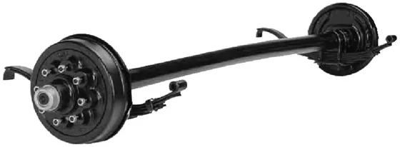
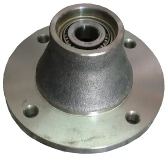
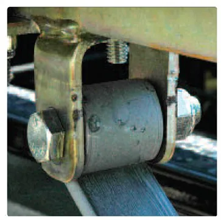
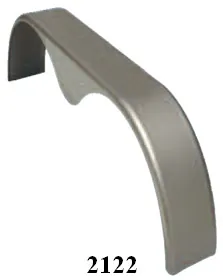
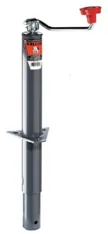
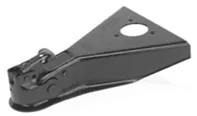
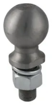
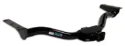
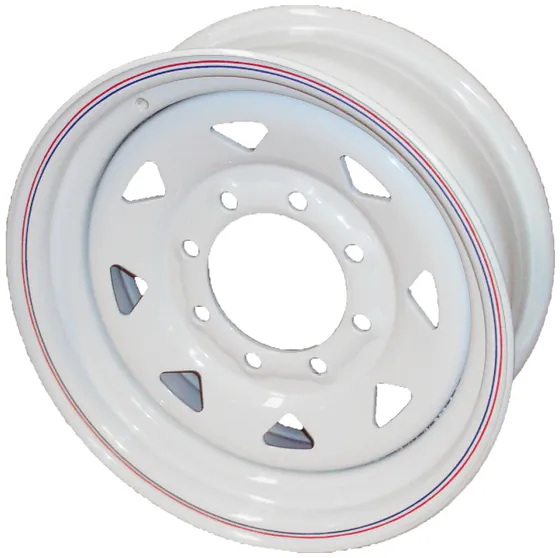
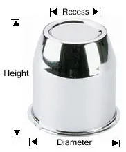
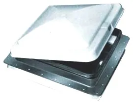
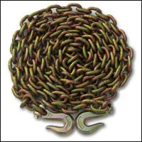
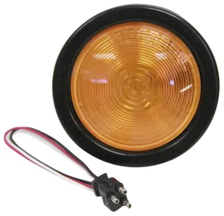
No se deje engañar por páginas web o WhatsApp falsos, aunque le envíen nuestros datos fiscales. Nuestras únicas páginas oficiales son www.llarasa.com y www.redellantasonline.com.